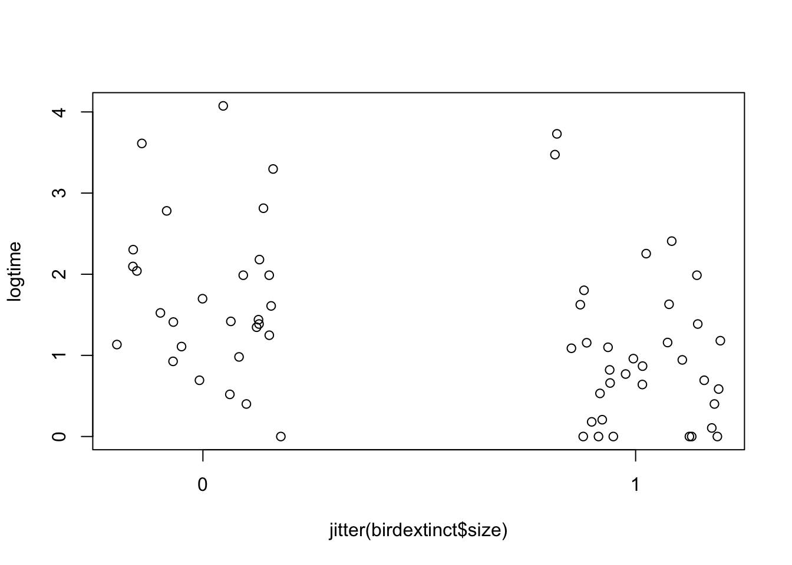
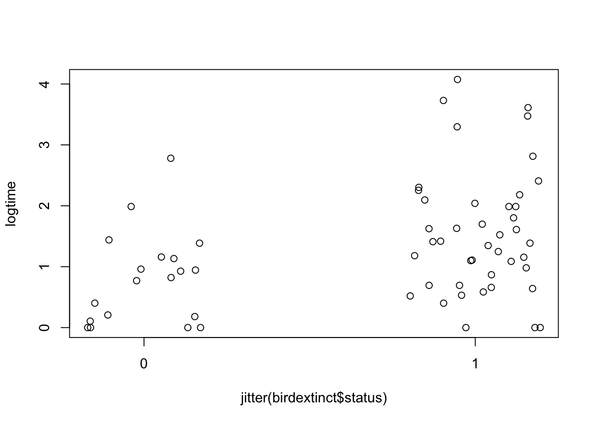
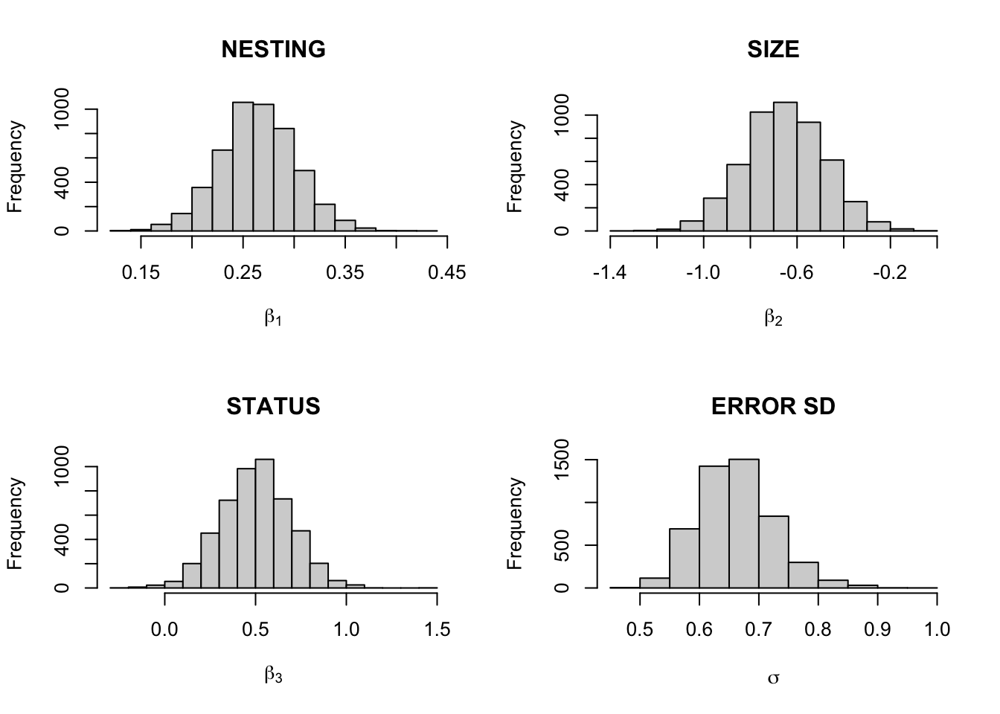
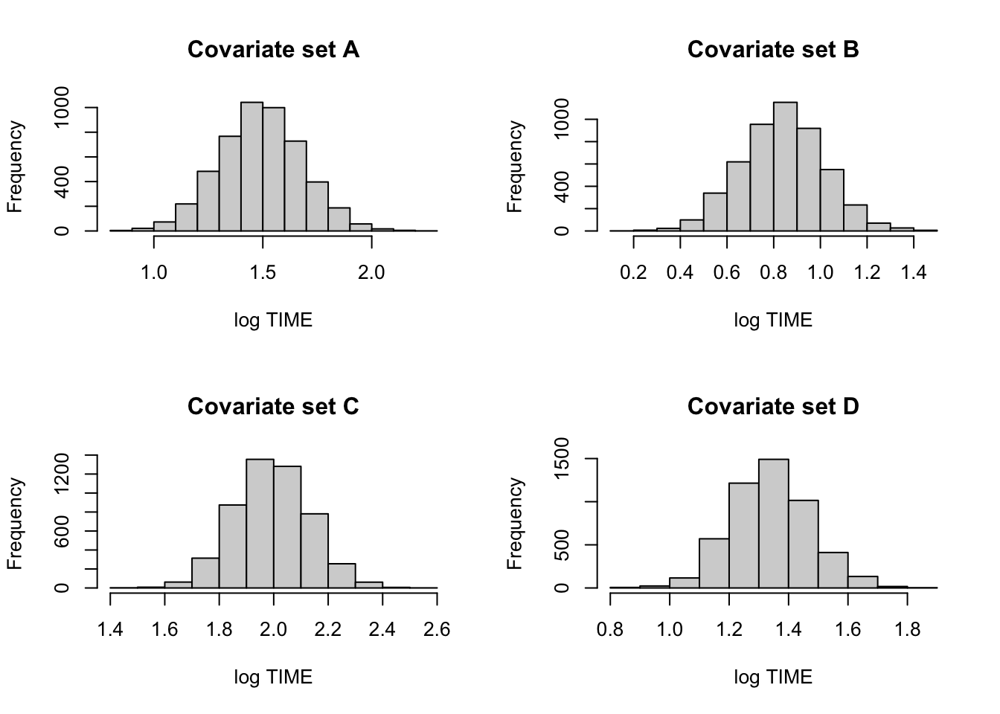
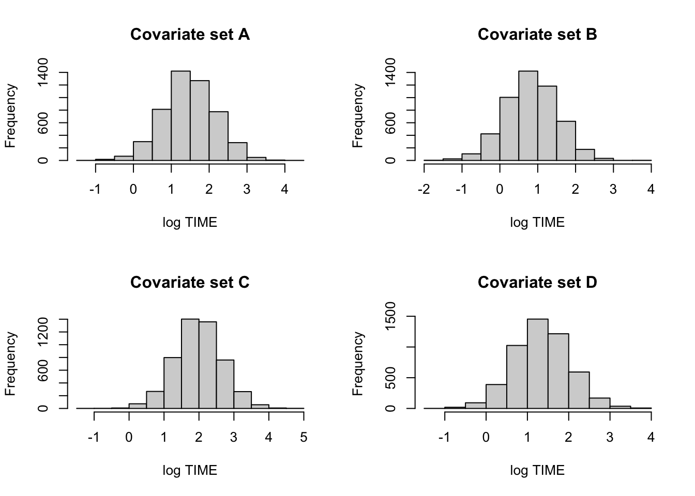
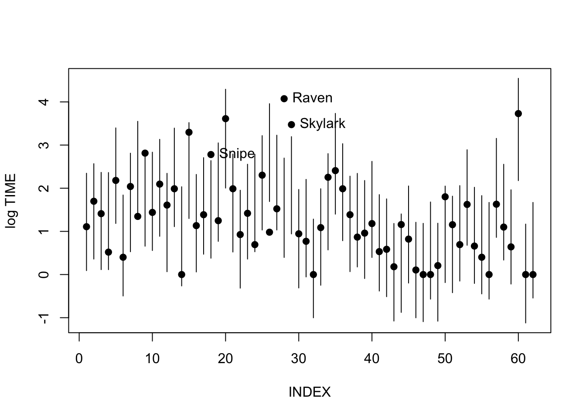
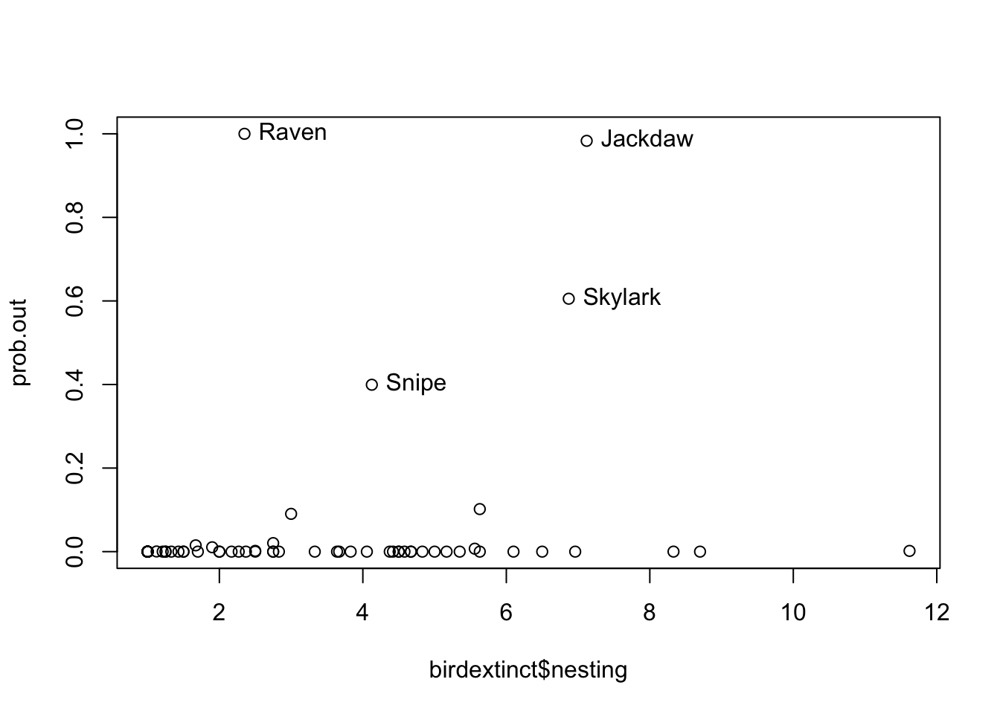
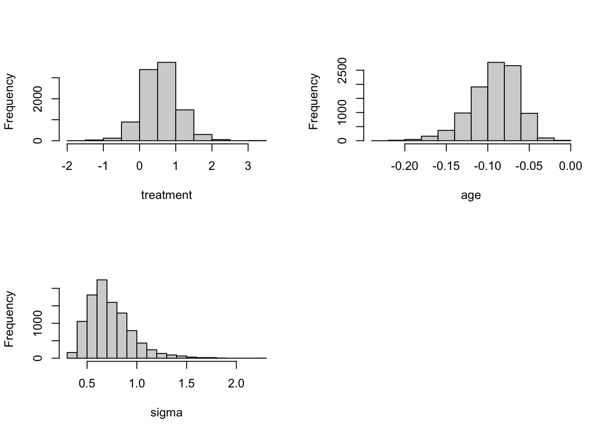

Chapter 9 Regression Models
9.1 An Example of Bayesian Regression
library(LearnBayes)logtime <- log(birdextinct$time)
plot(birdextinct$nesting, logtime)
out <- (logtime > 3)
text(birdextinct$nesting[out], logtime[out],
label=birdextinct$species[out], pos = 2) 
plot(jitter(birdextinct$size), logtime,
xaxp=c(0, 1, 1))
plot(jitter(birdextinct$status), logtime,
xaxp=c(0, 1, 1))
Least-squares fit:
fit <- lm(logtime ~ nesting + size + status,
data=birdextinct, x=TRUE, y=TRUE)
summary(fit)##
## Call:
## lm(formula = logtime ~ nesting + size + status, data = birdextinct,
## x = TRUE, y = TRUE)
##
## Residuals:
## Min 1Q Median 3Q Max
## -1.8410 -0.2932 -0.0709 0.2165 2.5167
##
## Coefficients:
## Estimate Std. Error t value Pr(>|t|)
## (Intercept) 0.43087 0.20706 2.081 0.041870 *
## nesting 0.26501 0.03679 7.203 1.33e-09 ***
## size -0.65220 0.16667 -3.913 0.000242 ***
## status 0.50417 0.18263 2.761 0.007712 **
## ---
## Signif. codes: 0 '***' 0.001 '**' 0.01 '*' 0.05 '.' 0.1 ' ' 1
##
## Residual standard error: 0.6524 on 58 degrees of freedom
## Multiple R-squared: 0.5982, Adjusted R-squared: 0.5775
## F-statistic: 28.79 on 3 and 58 DF, p-value: 1.577e-11Sampling from posterior using vague priors for parameters.
theta.sample <- blinreg(fit$y, fit$x, 5000)par(mfrow=c(2,2))
hist(theta.sample$beta[,2], main="NESTING",
xlab=expression(beta[1]))
hist(theta.sample$beta[,3], main="SIZE",
xlab=expression(beta[2]))
hist(theta.sample$beta[,4], main="STATUS",
xlab=expression(beta[3]))
hist(theta.sample$sigma, main="ERROR SD",
xlab=expression(sigma))
apply(theta.sample$beta, 2, quantile,
c(.05, .5, .95))## X(Intercept) Xnesting Xsize Xstatus
## 5% 0.08301736 0.2031766 -0.9385281 0.1871552
## 50% 0.42537546 0.2639260 -0.6541445 0.5055329
## 95% 0.79519902 0.3258697 -0.3713111 0.8134480quantile(theta.sample$sigma, c(.05, .5, .95))## 5% 50% 95%
## 0.5667969 0.6573449 0.7703726Estimating mean extinction times:
cov1 <- c(1, 4, 0, 0)
cov2 <- c(1, 4, 1, 0)
cov3 <- c(1, 4, 0, 1)
cov4 <- c(1, 4, 1, 1)
X1 <- rbind(cov1, cov2, cov3, cov4)
mean.draws <- blinregexpected(X1, theta.sample)c.labels <- c("A", "B", "C", "D")
par(mfrow=c(2, 2))
for (j in 1:4){
hist(mean.draws[, j],
main=paste("Covariate set",
c.labels[j]),
xlab="log TIME")
}
Predicting future extinction times:
cov1 <- c(1, 4, 0, 0)
cov2 <- c(1, 4, 1, 0)
cov3 <- c(1, 4, 0, 1)
cov4 <- c(1, 4, 1, 1)
X1 <- rbind(cov1, cov2, cov3, cov4)
pred.draws <- blinregpred(X1, theta.sample)c.labels <- c("A", "B", "C", "D")
par(mfrow=c(2,2))
for (j in 1:4){
hist(pred.draws[, j],
main=paste("Covariate set",
c.labels[j]),
xlab="log TIME")
}
Model checking: posterior predictive distribution distributions of each future observation, showing actual observation as solid dot.
pred.draws <- blinregpred(fit$x, theta.sample)
pred.sum <- apply(pred.draws, 2,
quantile, c(.05,.95))
par(mfrow=c(1, 1))
ind <- 1:length(logtime)
matplot(rbind(ind, ind), pred.sum,
type="l", lty=1, col=1,
xlab="INDEX", ylab="log TIME")
points(ind, logtime, pch=19)
out <- (logtime > pred.sum[2, ])
text(ind[out], logtime[out],
label=birdextinct$species[out], pos = 4)
Model checking via bayes residuals \(y_i - x_i \beta\). Graph of absolute values of residuals that exceeds a particular constant.
prob.out <- bayesresiduals(fit, theta.sample, 2)
par(mfrow=c(1, 1))
plot(birdextinct$nesting, prob.out)
out = (prob.out > 0.35)
text(birdextinct$nesting[out], prob.out[out],
label=birdextinct$species[out], pos = 4) 
9.2 Modeling Using Zellner’s g Prior
Illustrating the role of the parameter c:
X <- cbind(1, puffin$Distance -
mean(puffin$Distance))
c.prior <- c(0.1, 0.5, 5, 2)
fit <- vector("list", 4)
for (j in 1:4){
prior <- list(b0=c(8, 0), c0=c.prior[j])
fit[[j]] <- blinreg(puffin$Nest, X, 1000, prior)
}
BETA <- NULL
for (j in 1:4){
s=data.frame(Prior=paste("c =",
as.character(c.prior[j])),
beta0=fit[[j]]$beta[, 1],
beta1=fit[[j]]$beta[, 2])
BETA <- rbind(BETA, s)
}
library(lattice)
with(BETA,
xyplot(beta1 ~ beta0 | Prior,
type=c("p","g"),
col="black"))
Model selection of all regression models using g priors:
data <- list(y=puffin$Nest,
X=cbind(1, puffin$Grass, puffin$Soil))
prior <- list(b0=c(0, 0, 0), c0=100)
beta.start <- with(puffin,
lm(Nest ~ Grass + Soil)$coef)
laplace(reg.gprior.post,
c(beta.start, 0),
list(data=data, prior=prior))$int## [1] -136.3957X <- puffin[, -1]
y <- puffin$Nest
c <- 100
bayes.model.selection(y, X, c, constant=FALSE)## $mod.prob
## Grass Soil Angle Distance log.m Prob
## 1 FALSE FALSE FALSE FALSE -132.18 0.00000
## 2 TRUE FALSE FALSE FALSE -134.05 0.00000
## 3 FALSE TRUE FALSE FALSE -134.51 0.00000
## 4 TRUE TRUE FALSE FALSE -136.40 0.00000
## 5 FALSE FALSE TRUE FALSE -112.67 0.00000
## 6 TRUE FALSE TRUE FALSE -113.18 0.00000
## 7 FALSE TRUE TRUE FALSE -114.96 0.00000
## 8 TRUE TRUE TRUE FALSE -115.40 0.00000
## 9 FALSE FALSE FALSE TRUE -103.30 0.03500
## 10 TRUE FALSE FALSE TRUE -105.57 0.00360
## 11 FALSE TRUE FALSE TRUE -100.37 0.65065
## 12 TRUE TRUE FALSE TRUE -102.35 0.08992
## 13 FALSE FALSE TRUE TRUE -102.81 0.05682
## 14 TRUE FALSE TRUE TRUE -105.09 0.00581
## 15 FALSE TRUE TRUE TRUE -101.88 0.14386
## 16 TRUE TRUE TRUE TRUE -104.19 0.01434
##
## $converge
## [1] TRUE TRUE TRUE TRUE TRUE TRUE TRUE TRUE TRUE TRUE TRUE TRUE TRUE TRUE TRUE
## [16] TRUE9.3 Survival Modeling
Traditional fit using a Weibull model:
library(survival)
survreg(Surv(time, status) ~ factor(treat) + age,
dist="weibull",
data = chemotherapy)## Call:
## survreg(formula = Surv(time, status) ~ factor(treat) + age, data = chemotherapy,
## dist = "weibull")
##
## Coefficients:
## (Intercept) factor(treat)2 age
## 10.98683919 0.56145663 -0.07897718
##
## Scale= 0.5489202
##
## Loglik(model)= -88.7 Loglik(intercept only)= -98
## Chisq= 18.41 on 2 degrees of freedom, p= 0.000101
## n= 26Bayesian fit:
start <- c(-.5, 9, .5, -.05)
d <- with(chemotherapy,
cbind(time, status, treat - 1, age))
fit <- laplace(weibullregpost, start, d)
fit## $mode
## [1] -0.59986796 10.98663371 0.56151088 -0.07897316
##
## $var
## [,1] [,2] [,3] [,4]
## [1,] 0.057298875 0.13530436 0.004541435 -0.0020828431
## [2,] 0.135304360 1.67428176 -0.156631948 -0.0255278352
## [3,] 0.004541435 -0.15663195 0.115450201 0.0017880712
## [4,] -0.002082843 -0.02552784 0.001788071 0.0003995202
##
## $int
## [1] -25.31207
##
## $converge
## [1] TRUEproposal <- list(var=fit$var, scale=1.5)
bayesfit <- rwmetrop(weibullregpost,
proposal,
fit$mode,
10000, d)
bayesfit$accept## [1] 0.2849par(mfrow=c(2, 2))
sigma <- exp(bayesfit$par[, 1])
mu <- bayesfit$par[, 2]
beta1 <- bayesfit$par[, 3]
beta2 <- bayesfit$par[, 4]
hist(beta1, xlab="treatment", main="")
hist(beta2, xlab="age", main="")
hist(sigma, xlab="sigma", main="")